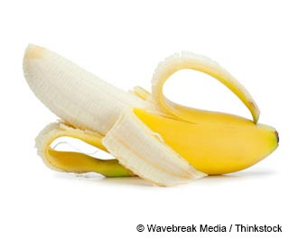
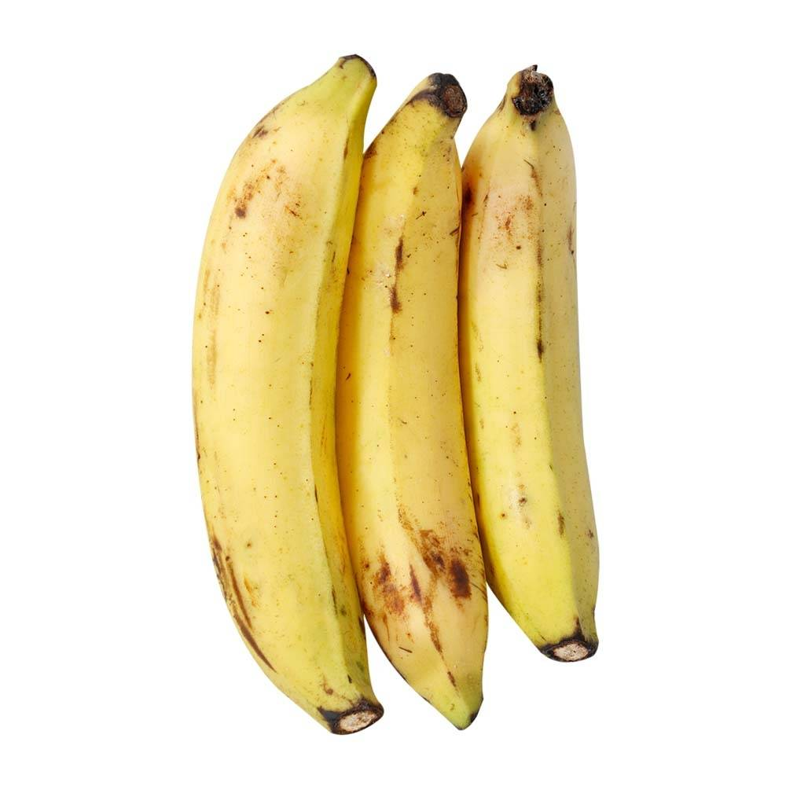

Flores: flores amarillentas, irregulares y con seis estambres, de los cuales uno es estéril, reducido a estaminodio petaloideo.
El gineceo tiene tres pistilos, con ovario ínfero. El conjunto de la inflorescencia constituye el “régimen” de la platanera.
Cada grupo de flores reunidas en cada bráctea forma una reunión de frutos llamada “mano”, que contiene de 3 a 20 frutos.
Un régimen no puede llevar más de 4 manos, excepto en las variedades muy fructíferas, que pueden contar con 12-14.
| FRUTOS | EPOCA QUE SE DAN | IMAGEN CON LINK |
| PLATANO | NORMALMENTE TODO EL AÑO PERO TAMBIÉN EN EPOCAS DE INVIERNO. |
 |
| PLATANO MACHO | EN EPOCAS DE INVIERNO. |  |